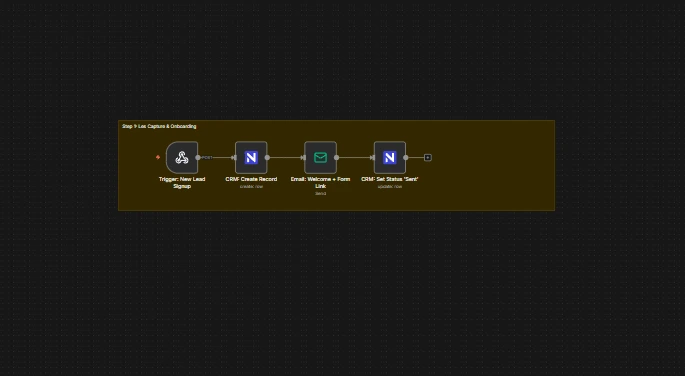
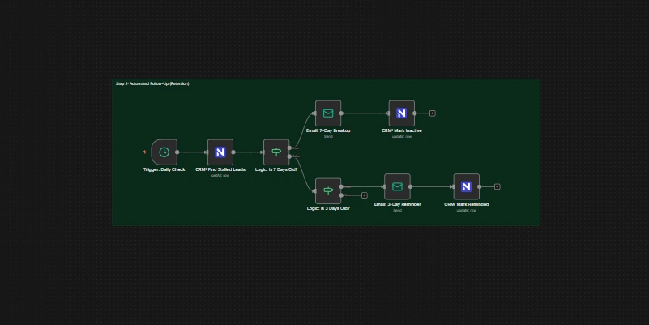
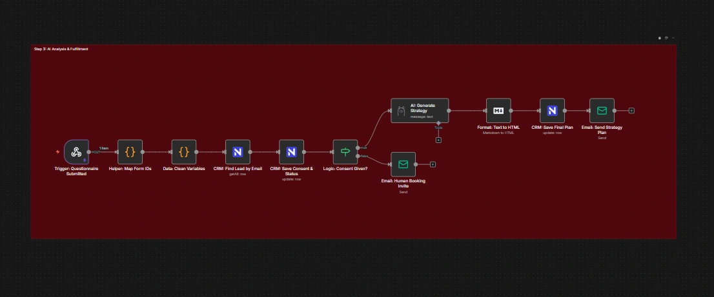
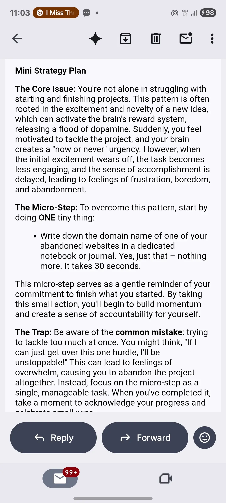
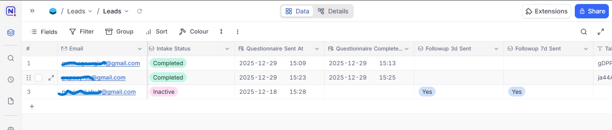

The 24/7 Intake Assistant.
How we help private practices reply to every inquiry instantly and onboard new clients 24/7, without hiring more admin staff.
Technical Brief
Free 15-min logic mapping session
The Challenge: The "Gap"
Adhoc Therapy had a classic problem. Potential clients would reach out when they were feeling vulnerable, but the practice was too busy to reply immediately. By the time the admin replied 24 hours later, the client had either moved on or lost the motivation to start.
A standard auto-responder feels cold. We needed a system that listens, understands, and follows up just like a human Care Coordinator would, while strictly protecting privacy.
01 The Solution: A "Human-First" Workflow
We architected a 3-Lane Logic System that separates Intake, Retention, and Intelligence.
Lane 1: The Digital Front Desk
Think of this as a receptionist who never sleeps. When a potential client requests help, the system instantly creates a secure file in the database and sends a warm, branded welcome email with the intake link.

Figure 1: The Intake & Database Flow
Lane 2: The "Gentle Nudge"
Clients often get overwhelmed and forget to complete the forms. The system notices when someone goes quiet. After 3 days, it sends a gentle, supportive check-in email to ensure no one slips through the cracks.

Figure 2: The Automated Retention Logic
Lane 3: The Intelligence Engine
For clients who consent, the workflow activates the Local AI Node. It acts as a firewall—checking consent flags before sending any text to the Llama 3 model for analysis.

Figure 3: The Consent & AI Logic Flow
02 Designing Trust: The Visual Layer
Automation is invisible, so the delivery must be perfect. I wrapped the AI's advice in a custom, hand-coded HTML email template. This ensures the brand feels premium, calming, and responsive on every device.

Mobile View (iPhone)
Code Features:
- Dark Mode Compatible
- Responsive Tables
- Brand Consistent Fonts
03 The Central Brain: A Self-Cleaning CRM
No more messy spreadsheets. All leads flow into NocoDB (a self-hosted database). The system automatically tags their status (New, Stalled, Completed) and saves their AI Strategy Plan into a dedicated column for the therapist to review later.

Figure 4: The Cleaned Data View in NocoDB
04 100% Private. No Data Leaks.
Trust is the currency of therapy. Unlike generic tools that send data to the cloud, this system runs on Local Infrastructure. Client data never leaves your secure server.
Local AI Inference
We use Ollama to run the Llama 3 model locally. This means even if the internet cuts out, the intelligence engine keeps working, and no 3rd party ever sees the client's intake form.
The Impact
See How It Handles a New Inquiry
Test the "Empathy Engine" live. See how the AI reads the emotional context and drafts a strategy.
Client Intake
Secure Form Entry
Too many leads, not enough time?
I can map this "Digital Front Desk" for your practice in a 15-minute call.
Map Your Logic